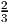
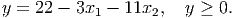

- Scenario 1 occurs with probability . The second stage variable y ∈ ℝ must satisfy the
constraints

- Scenario 2 occurs with probability . The second stage variable y ∈ ℝ must satisfy the
constraints

- (10 points) Assume x satisfies the first stage constraints. Show that in each scenario, there exists a recourse decision y that is feasible in the second stage problem.
- (10 points) Assume the cost of the second stage variables is 3y. Formulate the stochastic program in extended form as an LP. (Hint: your problem should have three equality constraints and four variables.)
- (10 points) Find all the basic feasible solutions to the LP formulation. Find the optimal solution.
- (5 points) What is the dual to the LP formulation?
- (10 points) Use complementary slackness to find the set of optimal solutions to the dual problem.
System 1: Ax < 0, Bx = 0 for some x ∈ ℝn.
System 2: AT u + BT v = 0 for some u ∈ ℝp, v ∈ ℝq, with u ≥ 0 and u≠0.
Let n = 4. Assume the cost ct of a tour is given by the sum of the edge lengths in the tour, and the edge lengths are as follows:
| city | 0 | 1 | 2 | 3 | 4 |
| 0 | – | 4 | 7 | 9 | 4 |
| 1 | 4 | – | 4 | 6 | 8 |
| 2 | 7 | 4 | – | 7 | 5 |
| 3 | 9 | 6 | 7 | – | 7 |
| 4 | 4 | 8 | 5 | 7 | – |

No tour is allowed to visit more than three cities (plus the base city). A tour can visit just one city and the base city. So, for example, valid tours include 0 - 4 - 0 with cost 8 and 0 - 1 - 2 - 3 - 0 with cost 24.
- (5 points) What is the dual LP to (CP)?
- (10 points) Let the current dual solution be y = (6, 8, 10, 7)T . Find a violated dual constraint.
- (10 points) There are 14 feasible tours for this problem. Enumerate them all and hence show that ŷ = (4, 8, 12, 5)T is dual feasible.
- (10 points) What does complementary slackness imply about the primal solution if the dual solution is ŷ? Show there is a primal feasible solution satisfying complementary slackness with each positive xt taking the same value. What do you conclude?